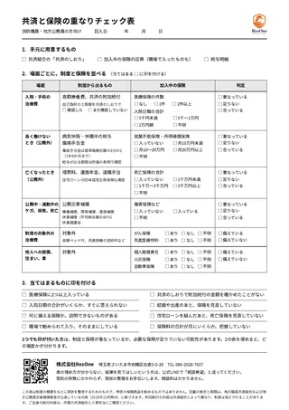

埼玉県さいたま市｜消防職員を中心とした公務員のための保険代理店
助ける人を、
助ける。
助ける。
人の
さいたま市消防局で消防隊・救助隊を経験した代表が立ち上げました。共済や公務災害補償を先に確かめ、足りない分だけを保険で補います。
- 相談料
- 無料
- 日時
- 勤務に合わせて調整
- 方法
- オンライン・対面
お知らせ
- 2026年11月
- コラム「公務員の退職金と老後の備え 定年65歳で変わること」を掲載しました。
- 2026年11月
- コラム「消防士におすすめの保険は？ 元消防士が解説する選び方」を掲載しました。
- 2026年11月
- コラム「住宅ローンを組んだあと、死亡保険はどう変わるのか」を掲載しました。
過去のお知らせ（4件）
- 2026年11月
- コラム「共済と民間保険、どこが重なるのか」を掲載しました。
- 2026年11月
- ホームページを公開しました。
- 2026年10月
- 日本生命保険相互会社、はなさく生命保険株式会社の取扱いを開始しました（取扱保険会社は生命保険4社・損害保険1社になりました）。
- 2026年3月3日
- 株式会社ResOneを設立しました。
事業内容
消防士の
今ある保障を先に確認
共済、公務災害補償、社会保障と、加入中の保険を一枚にまとめます。契約の有無に関係なく行います。
複数社から比較
生命保険4社・損害保険1社から、意向に合うものを比較し、勧める理由を説明します。
勤務に合わせて面談
勤務に合わせて日時を決めます。交替制勤務の方は非番・週休の日に合わせます。対面でもオンラインでも対応します。
代表挨拶

消防署に
消防職員には、共済や公務災害補償など、民間保険の前に確認すべき制度があります。それを使い切ったうえで、足りない分だけを保険で埋める。その提案を続けています。
代表取締役 津野 巧也
お問い合わせ
保険の見直し、新しい保障のご相談、ご家族の保険についてなど、まずはご連絡ください。勤務シフトに合わせて面談の日時を決めます。相談だけで終わってもかまいません。
ご相談は公式LINEから
友だち追加のあと、トークに「相談希望」と送ってください。勤務中でも、空いた時間にやり取りできます。相談料はかかりません。
LINEで友だち追加
 パソコンの方はスマホで読み取り
パソコンの方はスマホで読み取り

共済と保険の重なりチェック表印を付けるだけで確認できます（A4・1枚）。友だち追加のあと「チェック表」と送ってください。
- 電話
- 080-2028-7637面談中は出られないことがあります。折り返しご連絡します。
お名前、ご所属（任意）、ご希望の面談方法をお知らせください。いただいた個人情報はご相談への対応以外には使いません。